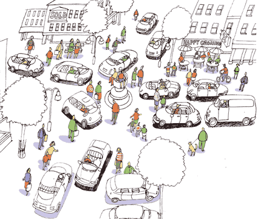

Un croisement idéal
En retravaillant Le peuple des connecteurs en préparation de la seconde édition audio, j’ai cherché à savoir la suite donnée aux expériences de routes sans signalisation. Sur le site de Ben Hamilton-Baillie, le spécialiste anglais de cette technologie de connecteur, j’ai découvert un projet imaginaire pour la ville de Bristol.

bristol1.gif

bristol2.gif
Ces deux dessins, avant et après, parlent d’eux-mêmes. Ils illustrent le passage du monde pyramidal au monde des connecteurs. Quand on enlève les signalisations, quand les hommes s'interconnectent en direct, la ville reprend vie.
Suite | 2007 | Sommaire | Texte publié mardi 4 décembre 2007